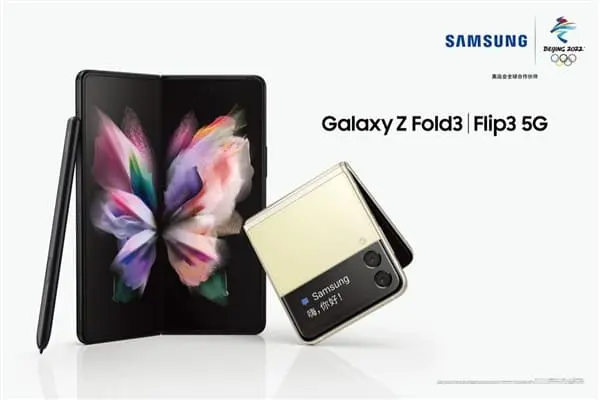

2021年8月11日，三星電子正式推出三星Galaxy Z Fold3 5G 和三星Galaxy Z Flip3 5G兩款智能手機，揭開了折疊屏產品創新體驗的新篇章。
作為折疊屏品類的新一代力作，兩款產品均傳承了三星一直以來的出眾品質，並彙集了強勁性能、精湛工藝以及備受用戶期待的創新功能。
同時，三星還結合折疊屏用戶的心聲與期待，為兩款產品帶來了突破性的升級，使新一代折疊屏產品更加耐用，進一步優化日常使用體驗。無論是喜愛標誌性設計、還是更加期待沉浸式娛樂體驗的用戶，三星Galaxy Z Flip3 5G 和三星Galaxy Z Fold3 5G都將帶來不同以往的辦公和娛樂新體驗。

對於在高效辦公和沈浸式娛樂體驗方面有著高標準要求的用戶，三星Galaxy Z Fold3 5G能夠提供強勁的性能與動力，搭載的7.6英寸（直角）沉浸式屏下攝像折疊屏，是三星首次支持S Pen大屏書寫的可折疊屏幕，能夠為用戶帶來出色的多任務處理與流暢的使用體驗。而對於追求時尚與功能性兼具的用戶，三星Galaxy Z Flip 5G則採用了輕巧、便攜的設計。進一步升級的相機性能，以及更大尺寸的外部屏幕4也為用戶提供了優質且便捷的使用體驗。
隨著三星Galaxy Z Fold3 5G和Galaxy Z Flip3 5G的問世，三星再一次詮釋了折疊屏智能手機的無限可能。尤其在快節奏的生活中，折疊屏手機為當代用戶帶來了更多靈活性與實用性體驗。三星電子移動通信部門總裁
盧泰文表示，“作為折疊屏品類的開拓者和領跑者，三星非常自豪能在Galaxy Z Fold3 5G和Galaxy Z Flip3 5G上為消費者帶來更多創新體驗。此外，基於開放與創
新的Galaxy生態系統，兩款新機也為用戶解鎖了隨時隨地暢享出眾科技體驗的全新方式。
精湛工藝，歷久彌新
為了滿足用戶期望折疊屏產品更加
經久耐用的需求，新一代三星Galaxy Z系列採用了更為精湛的工藝。首先，三星Galaxy Z Fold3 5G和三星Galaxy Z Flip3 5G是三星折疊屏智能
手機中首次支持IPX8級防水的手機，讓用戶使用時無懼浸水。其次，在材質方面，兩款新機也採用了目前Galaxy智能手機中更為堅固的新型「裝甲鋁」
材質，並搭配超堅韌的Corning® Gorilla® Glass Victus?玻璃，幫助用戶在日常使用時盡可能地減少划痕和刮擦造成的損傷。此外，內部主屏還採用了具有延展性的PET材質保
護膜，令折疊屏幕的耐用性相比前代產品提高了80%。
嚴苛的工藝標準讓三星創造出了多款經久耐用且值得用戶信賴的產品，並引領了折疊屏行業的發展。起初，三星在Galaxy Z Flip上引入了頗具顛覆性的隱形鉸鏈，並且實現了將設備展開固定在多種角度使用的自適應分屏模式，為
用戶帶來了創新的折疊屏體驗。不僅如此，得益於防塵纖維技術的全面升級，鉸鏈內部的刷毛比以前更短，有助於阻隔灰塵和其他顆粒物的侵入，進而保
證設備的耐用性與用戶體驗。如今，三星Galaxy Z Fold3 5G和Galaxy Z Flip3 5G也同樣歷經嚴格的耐用性測試，並且經必維國際檢驗集團（Bureau Veritas）認證，兩款產品均可承受高達20萬次開合。加上強勁
的5nm處理器和5G頻段的強大兼容性，能夠讓用戶獲得由內而外一如既往的優質體驗。
三星Galaxy Z Fold3 5G：釋放生產力，暢享娛樂新體驗
得益於全新UDC屏下攝像頭（Under Display Camera）技術，當用戶展開三星G
alaxy Z Fold3 5G時，即可沉浸在如影院般的視覺效果中。這塊7.6英寸（直角）的沉浸式屏下攝像折疊屏可以讓用戶盡情觀看自己喜愛的視頻而不受視覺干擾，暢享沉浸式體驗。具體來說，即三星在Galaxy Z Fold3 5G內部主屏的攝像頭孔上方，分配了少量的屏幕像素點，從而擴大了屏幕顯示區域，讓用
戶使用應用時可以暢享完整的大屏體驗。此外，全新Eco²屏顯技術，不僅提升了29%的屏幕亮度，同時也進一步降低了功
耗。對於用戶關心的屏幕刷新
率，三星Galaxy Z Fold3 5G的內部主屏和外屏均支持120Hz自適應刷新率，帶給用戶更加流暢、順滑與逼真的視覺感受。
此次，三星還將Galaxy Note系列中備受用戶喜愛的S Pen功能，首次加入到三星Galaxy Z Fold3 5G上。用戶可
以在三星Galaxy Z Fold3 5G內部主屏上，感受到這支經過優化的S Pen為多任務處理體驗帶來的提升。同時，得益於三星Galaxy Z Fold3 5G搭載的超
大內部主屏，用戶還可以更輕鬆地在視頻通話的同時記錄筆記，或在查閱電子郵件時核對待辦事項，充分激發自己的創造力和生產力。為了滿足不同用戶的需求，三星為Galaxy Z Fold
3 5G的用戶提供了兩個版本的S Pen進行選擇，分別是三星Galaxy Z Fold3 5G專屬S Pen和S Pen Pro。這兩款S Pen均採用了可伸縮Pro筆尖的特殊設計，以及壓感控制技術，讓用戶在使用過程中
能夠擁有更舒適的書寫及交互體驗，同時也更好地保護內部主屏。其更低的書寫延遲，更易確保記錄筆記與發送消息時更加連貫和直觀的使用體驗。
延伸閱讀